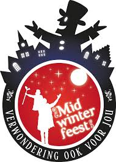
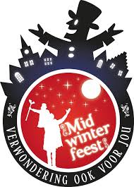

Op 21 december, de dag dat de winter begint, viert Almere Centrum het Midwinterfeest voor jong en oud.
Restaurantplein Belfort wordt voor de gelegenheid omgetoverd tot IJsplein met verschillende ijs- en
vorstgerelateerde activiteiten. Er zijn bijvoorbeeld ijssculpturen en Elsa en Olaf uit de populaire film
Frozen komen op bezoek. Het Forum wordt een Vuurplein waar vlammende verrassingen als vuurdraken en
marshmallows roosteren op het programma staan. Het feest wordt afgesloten met een Parade en een optreden van
zangeres Maan.
IJsplein
Van 12.00 – 18.00 uur staat Restaurantplein Belfort in het teken van ijs. Om te beginnen zijn er prachtige
ijssculpturen te bewonderen. Om te laten zien hoe deze tot stand komen zijn er doorlopend ice-carving
demonstraties. Elsa en Olaf voelen zich natuurlijk helemaal thuis op het IJsplein en komen dan ook graag
langs om jonge fans en hun ouders te ontmoeten. Hiervoor zijn er meet & greets van 12.30 – 13.15 uur en van
14.00 – 14.45 uur. Bij de speciale selfiespot kunnen selfies worden gemaakt waarbij het lijkt alsof je bent
ingevroren.
Vuurplein
Op het Forum kunnen bezoekers weer op temperatuur komen. Kinderen kunnen er van 12.00 – 18.00 uur bijzondere
vuurdraken maken en bij het vuur broodjes bakken of marshmallows roosteren. De Wastelanders van Abacus
Theater geven met hun van schroot gemaakte Roadsters optredens waar de vonken vanaf spatten. Zij staan van
13.30 tot 16.30 elk uur op het programma.
Parade
Als afsluiting van het Midwinterfeest start om 18.30 vanaf het Forum een spectaculaire en bonte parade.
Vuurmeesters en pretvormers luiden hiermee op vrolijke wijze de midwinternacht in. De Parade en het
Midwinterfeest worden om 19.30 afgesloten met een optreden van Maan op het Forum.